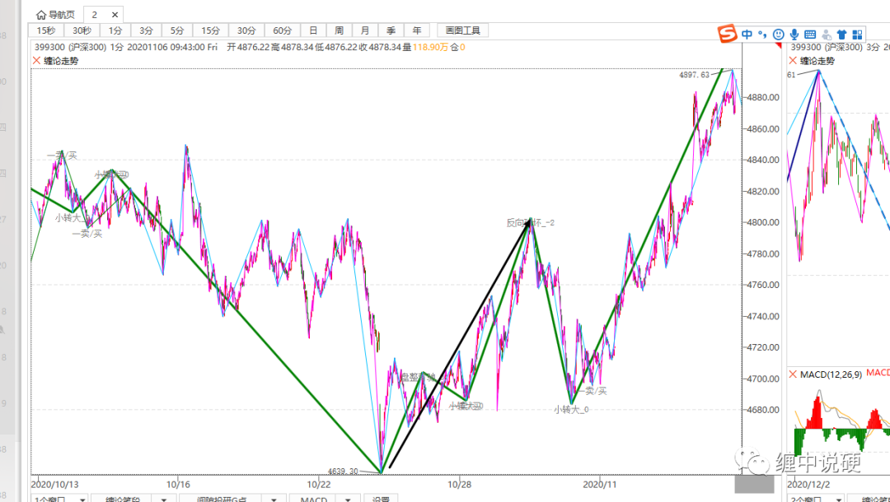
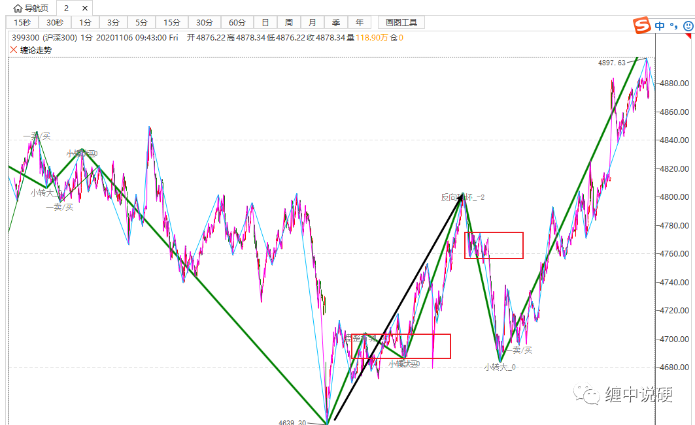

递归层面怎么画大级别中枢

图中蓝色为1分钟线段；
绿色为系统用1分钟递归的5分钟段；
黑色为李又硬认为正确的画法。
李又硬：我觉得绿色画法是错误的，黑色才是对的。
答：两个画法都可以，但在特定情况下，绿色的画法更好。
中枢升级的定义有两点：
1：围绕一个中枢震荡超过或者等于9段；
2：两个同级别中枢有任何触碰。

观察上图，图中显然有两个中枢，且发生了触碰，此时5分钟中枢必然已经形成。
最基本的走势原则，可以三段三段连，画出大级别中枢。显然绿色的画法是符合要求的。
有5分钟中枢，也可以根据走势结束点，上图前三段可以看成是一个走势，画成黑色箭头这样也是可以的，因为不违反走势划分的原则。

不违法原则的画法有很大，关键是最找最优的画法。
如上图，圆圈在1分钟图上已经扩张为5分钟中枢，如果在5分钟图上只根据走势结束点，画出5分钟段，而没有画出5分钟中枢，走势的信息会发生改变，相同一张图：1分钟图上得出信息为5分钟趋势，而在5分钟图上，得出信息是5分钟盘整走势。